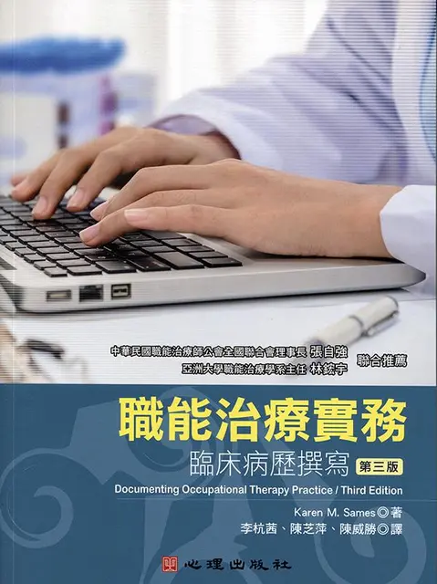
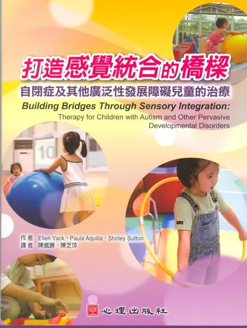
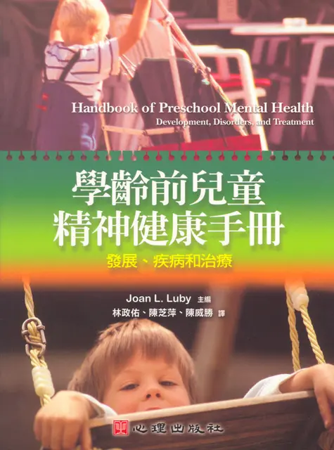
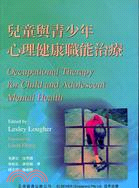

PUBLICATIONS
出版品
整理 Eliza 參與的專業著作、專書章節與譯作。這些出版歷程橫跨心理健康職能治療、實證職能治療、兒童與青少年心理健康、感覺統合、臨床專業溝通與幼兒教育，也構成 Seraphina 今日研究與知識轉化工作的專業軌跡。
01 著作03 專書／章節07 譯作11 筆出版成果
AUTHORED WORK
著作
以作者身分參與撰寫的專業書籍。
ACADEMIC BOOKS & CHAPTERS
專書與專書論文
依亞洲大學正式師資頁補入的近期專業出版成果。
2024
2024
專書 · Academic Book
職能治療師考試秘笈．四：心理職能治療學
以心理職能治療專業知識與國考重點為核心的專業參考書，呈現 Eliza 在心理職能治療知識整理與專業教育上的持續投入。
查看出版資訊 ↗2020
專書論文 · Book Chapter
實證職能治療學：第十七章〈心理職能治療之個案範例〉
以心理職能治療個案為核心，將實證導向的臨床思考與職能治療實務連結，補充 Seraphina 在研究證據與臨床應用之間的專業脈絡。
亞洲大學正式紀錄 ↗TRANSLATED WORKS
譯作
將國際專業知識引介至中文讀者的翻譯出版品。




譯作 · Translation
打造感覺統合的橋樑：自閉症及其他廣泛性發展障礙兒童的治療
將感覺統合理論轉化為可理解、可執行的活動與環境策略，支持自閉症及其他發展障礙兒童的學習與生活參與。
查看出版資訊 ↗


出版日期、作者／譯者名單與外部連結依 AML 既有出版品資料及亞洲大學正式師資頁整理；正式書目資訊仍以出版社、書店、館藏或校方學術資料為準。